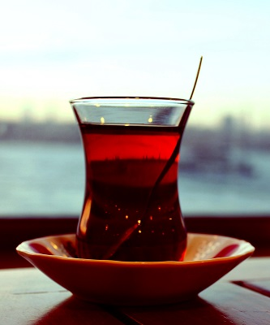
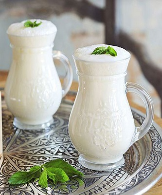
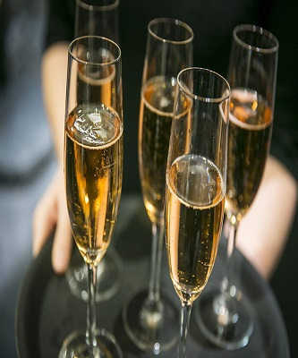

Coffee and Tea

The most widespread drink in Istanbul is tea (çay), served in small, tulip-shaped glasses. Turks consume it during breakfast, and continue drinking it throughout the day. They’ll offer it to you in shops and bazaars, and even in banks and offices. What about their famous Turkish coffee (Türk kahvesi) then? Locals usually drink it mid-morning and to finish off a meal.
Black tea
— Locals drink it almost as black as coffee, often without any accompaniment. However, chances are this will be too ‘strong’ for you. Try to start with the lighter version
(açık çay)
and add lumps of sugar as you like. Unless you’re in a tourist hotel or restaurant, asking for milk will raise eyebrows.
Apple tea
— This type of tea is not actually served, but merely sold to tourists to take back home.
Turkish coffee
— It is dark, strong and ordered according to how much sugar want in it: little (az), medium (orta) and a lot (çok şekerli).You drink it in a few short sips. Keep in mind to stop in time, since you’re not supposed to drink the grounds at the bottom of the cup.
Other Non-Alcoholic Drinks

Water
— As previously mentioned in our health guidelines, locals don’t drink it from the tap, and neither should you. Bottled mineral water is cheap and sold literally everywhere. Also note that water-sellers
(around the Blue Mosque)
in garish, traditional-looking clothes serve drinks based on tap water.
Ayran
— This is liquid yoghurt made by whopping yoghurt and adding water and salt. It should be served cold and fresh, so don’t keep it for later. It’s sold freshly made in café’s and restaurants or in plastic cups in grocery shops and supermarkets.
Boza
— Another local drink to sample is boza, made from fermented bulgur with water and sugar. It supposedly builds up strength and virility, but I still need to find the first scientific report to back this up.
Fruit and vegetable juices
— Why buy and consume bottled juices when every corner shop (büfe) will be happy to make you a fresh one on the spot. Popular juices are orange juice (portakal suyu), cherry juice (vişne suyu) and trunip juice (şalgam suyu). If you happen to be in Istanbul in winter, check out the strange but delicious taste of salep,
a hot drink made from crushed tapioca root extracts.
Alcoholic Drinks

Rakı
— This is a strong, clear, anise-flavored spirit, similar to Greek ouzo and French pastis. Most people drink it by adding cold water and ice cubes (in that order), which gives rakı its chalky white look. Hence why people also call it lion’s milk. The most popular brands are Yeni, Efe and Tekirdağ. Locals usually consume rakı while enjoying mezes and fish.
Beer
— Efes Pilsen is the undisputed number one beer in Turkey. And rightfully so. This perky inoffensive pilsener comes in bottles, cans and on tap. When ordering, the waiter or bar tender will ask you what size you prefer. The most common options are small (33cl) or big (50cl). If you prefer a wheat beer, try out Gusta. It’s brewed by the same company that produces Efes. Imported beers choices are mostly limited to Tuborg, Corona, Beck’s and Heineken.
Wine
— Local wine choices are plentiful thanks to the flourishing Turkish wine industry. And a handful of wineries produce excellent wine, comparable with those created in France. Our current top choices for both red and white wines are Corvus, Kayra Vintage, and Sarafin.